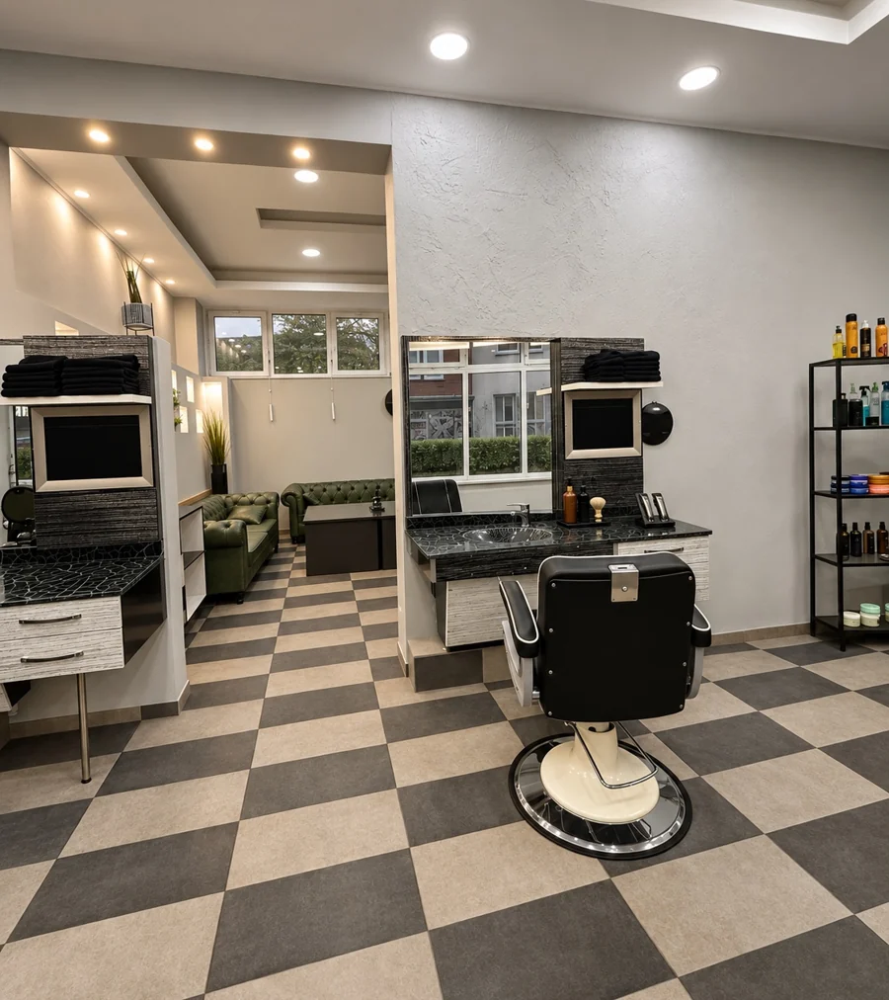
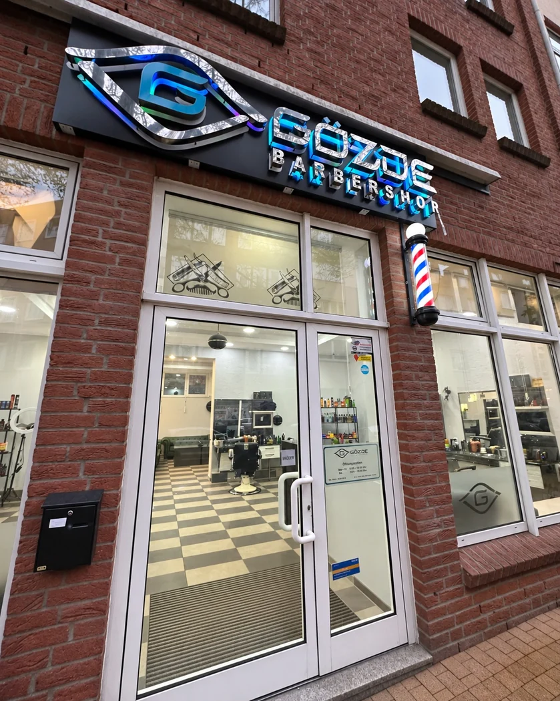
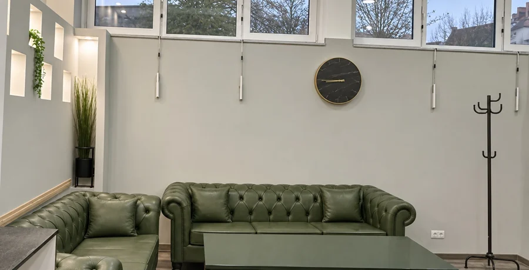
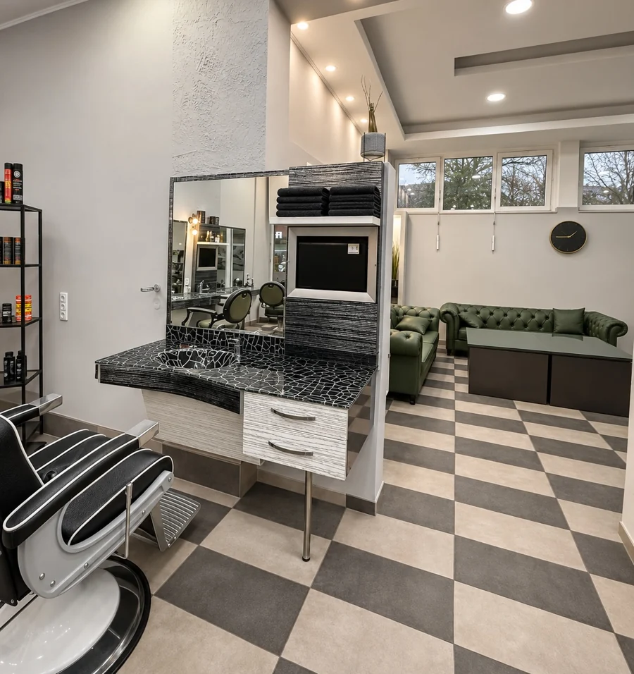
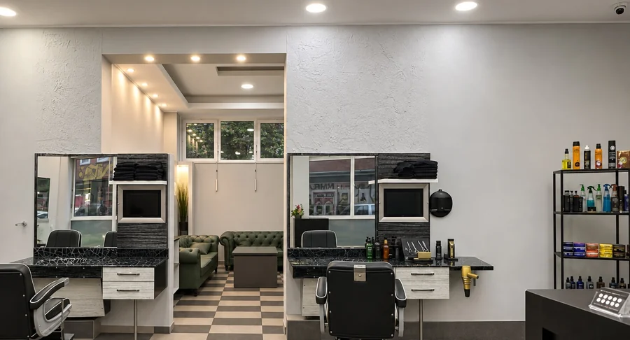
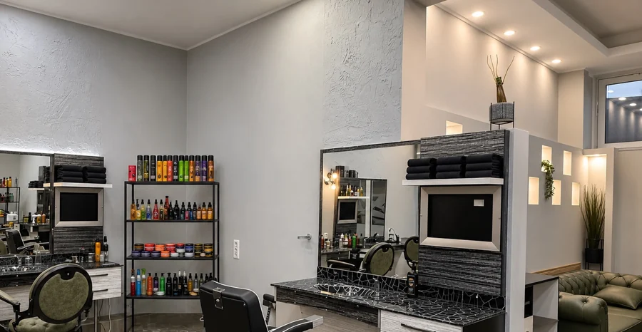

Kiel · Gaarden-Ost
GözdeBarbershop
Fades, klassische Schnitte und präzise Bartkonturen in der Johannesstraße.


Aus dem Barberstuhl.
Welcher Schnitt passt zu dir? Wähle einen Schnitt, um das Originalfoto des Salons auf Google Maps zu öffnen.
Der Salon.
Die blaue Leuchtschrift an der Johannesstraße 45 zeigt dir den Eingang. Drinnen warten grüne Chesterfield-Sofas.









Dein Termin.
0431 38549076Hier findest du uns
Johannesstraße 4524143 Kiel-GaardenIn Google Maps öffnen
Rollstuhlgerechter Eingang
Öffnungszeiten
- Montag bis Freitag
- 09:00–19:00
- Samstag
- 09:00–18:00
- Sonntag
- Geschlossen
Für deinen Besuch empfehlen wir einen Termin.